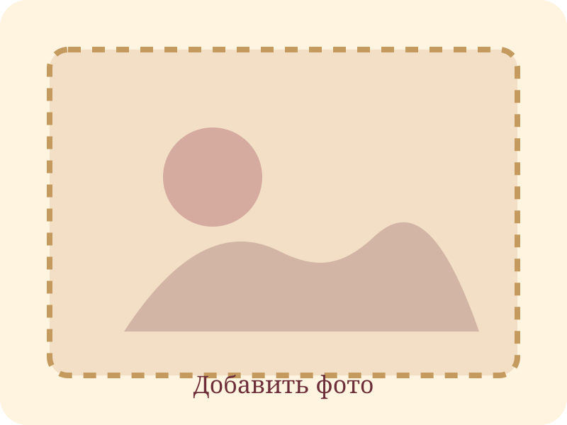

Семейные снимки
Фотографии
Пока здесь стоят аккуратные заглушки. Когда появятся реальные фото, положите их в папку
images и замените пути в этом файле.

Семейные снимки
Пока здесь стоят аккуратные заглушки. Когда появятся реальные фото, положите их в папку
images и замените пути в этом файле.
